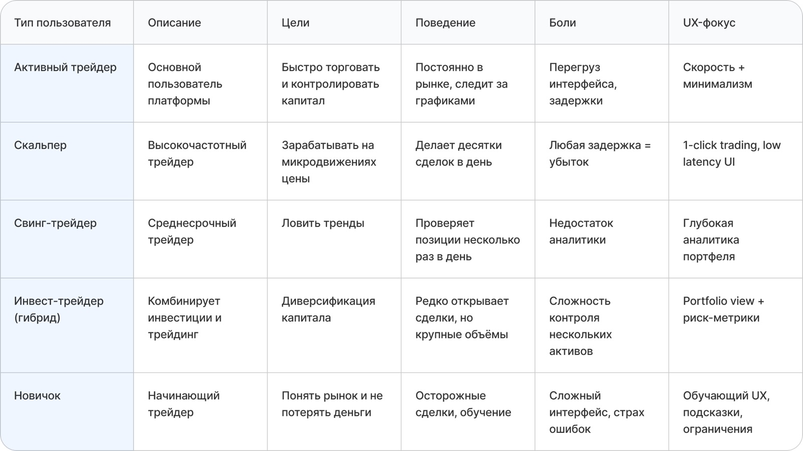
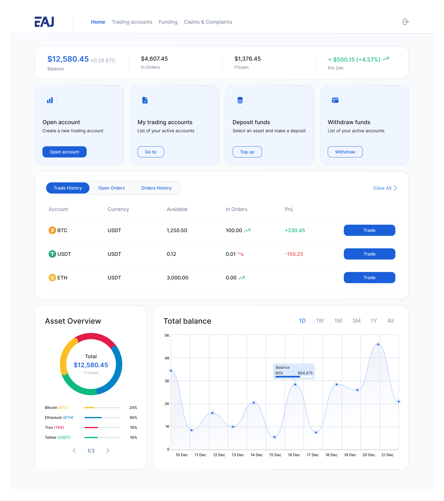
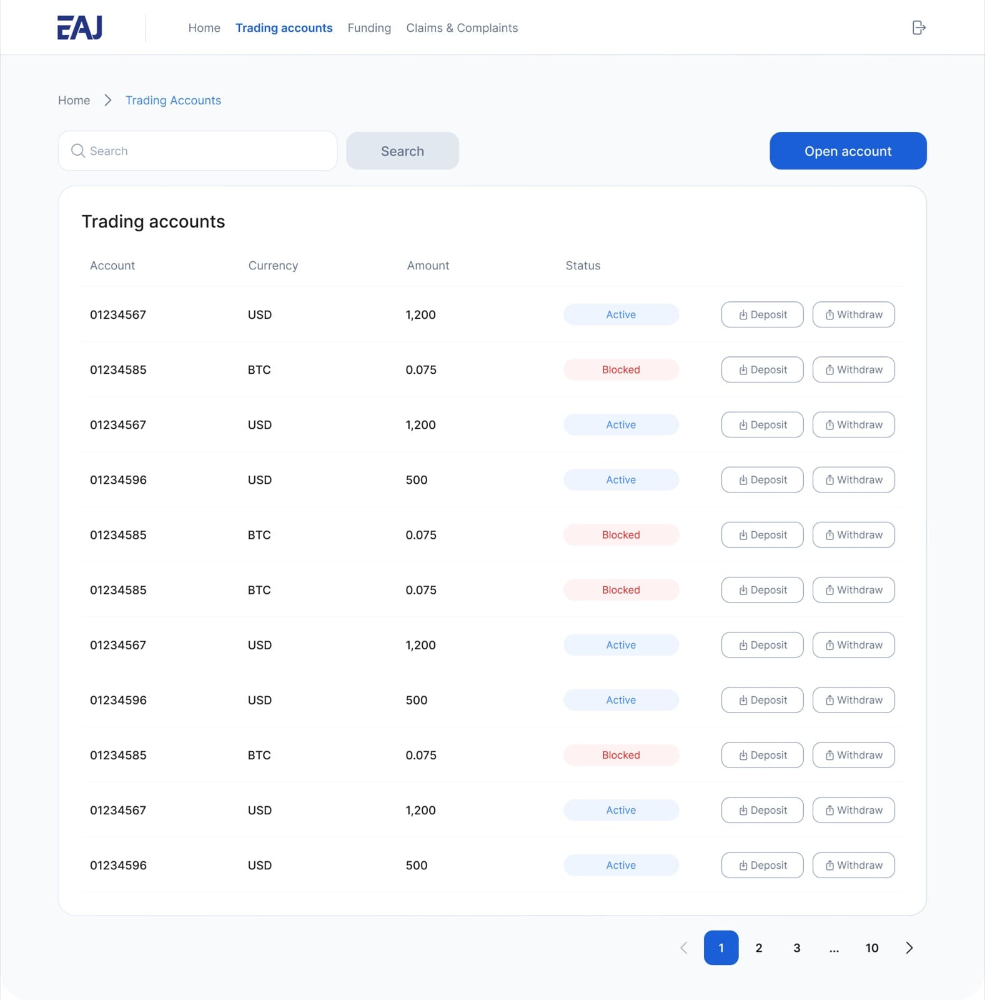
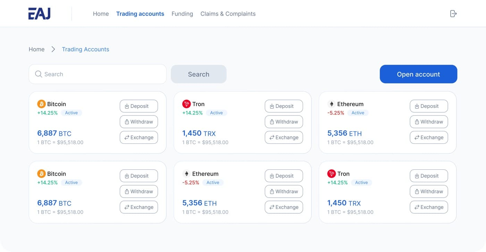
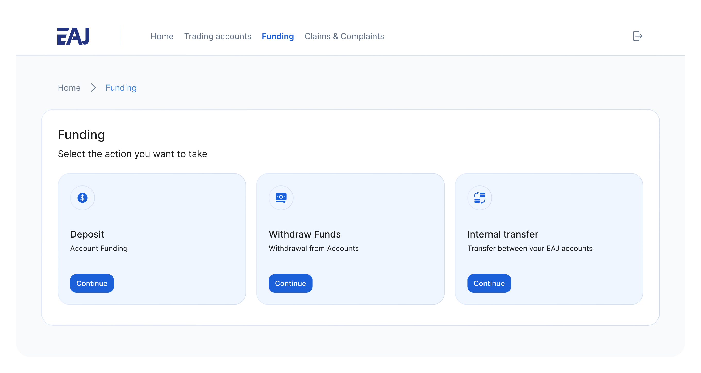
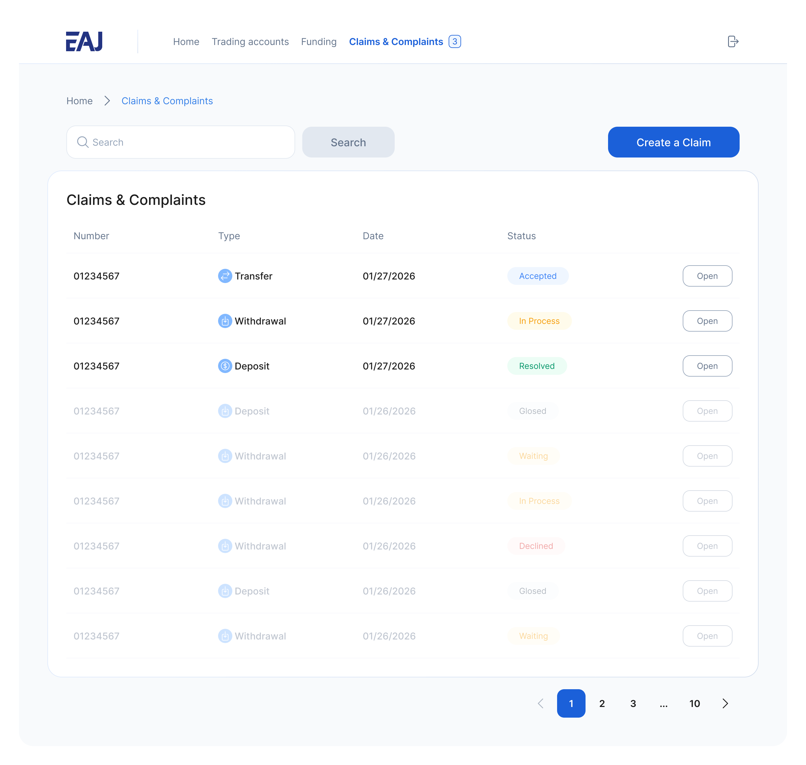
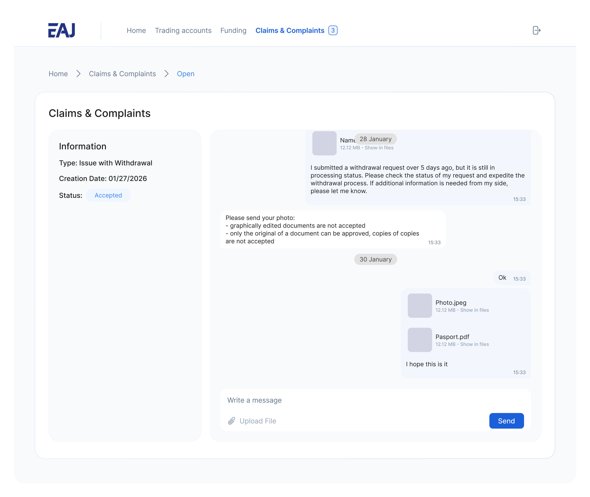

Создать MVP личного кабинета с нуля, который покрывает ключевые финансовые сценарии пользователей и формирует основу для дальнейшего развития продукта.
На предыдущем этапе разработала айдентику и лендинг проекта, а в рамках этого кейса сфокусировалась на проектировании личного кабинета: структуре, логике и интерфейсах для управления счетами, пополнения, вывода средств, переводов и отслеживания баланса.
Заказчик уже провёл предварительное исследование и сформировал список ключевых функций, поэтому фокус работы сместился на бизнес-анализ: кто является пользователем личного кабинета, чем отличаются их сценарии поведения и как эти различия должны повлиять на структуру системы.

Разделение пользователей на активных трейдеров и менее активную аудиторию показало: попытка спроектировать универсальный интерфейс приводит к потере эффективности для обоих сегментов. MVP сфокусировался на оптимизации сценариев для активных трейдеров, с заложенной основой для дальнейшей персонализации.
Бизнес-анализ показал пять разных типов пользователей личного кабинета — от скальпера, для которого любая задержка интерфейса означает убыток, до новичка, которому нужен обучающий UX. Эти различия напрямую определили, какие сценарии MVP должен закрыть в первую очередь.
Основной пользователь платформы
Высокочастотный трейдер
Среднесрочный трейдер
Комбинирует инвестиции и трейдинг
Начинающий трейдер
Ключевые сценарии: управление счетами, пополнение, вывод средств, переводы между счетами и отслеживание состояния средств. Основной экран спроектирован вокруг быстрого доступа к операциям, вторичные и аналитические данные вынесены в менее приоритетные зоны.

Торговый счёт — основная сущность продукта, точка входа во все ключевые сценарии. Первый вариант: классический табличный список счетов, паттерн, широко используемый у конкурентов и привычный пользователям. Протестировали его в качественном UX-исследовании с фокусом на базовые сценарии.

Во втором концепте пересобрала представление счетов в карточный формат, где каждый счёт — самостоятельная единица с полной информацией и действиями. Несмотря на то, что табличный формат оказался более ожидаемым и привычным, карточный показал лучшие результаты в понимании и скорости взаимодействия. Выбрала его как основное решение, оставив таблицу в резерве для масштабирования при росте числа счетов.

Объединила пополнение, вывод и внутренние переводы в единый раздел Funding. Решение приняли совместно с заказчиком, чтобы упростить навигацию и сократить количество разрозненных точек входа в финансовые операции. По результатам юзабилити-тестирования пользователи отмечали более простое восприятие структуры и быстрый доступ к операциям.

Добавила раздел Claims & Complaints: встроенный блок обращений в формате чата. В спорных ситуациях критично важен быстрый прямой канал коммуникации без поиска внешних контактов. На этапе раннего запуска ожидается повышенное количество обращений, поэтому чат стал не только каналом поддержки, но и инструментом обратной связи для улучшения продукта.


Спроектирован MVP веб-кабинета для управления финансовыми операциями. Заложенная структура решения позволяет масштабировать продукт за счёт добавления новых сценариев без нарушения основной логики взаимодействия.